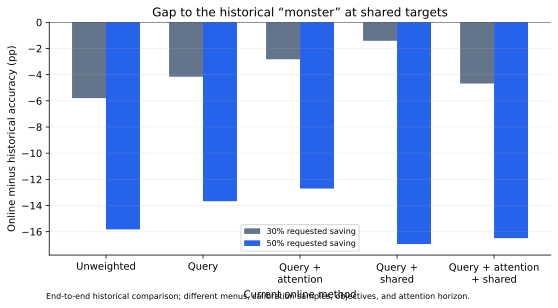

SPATIAL KV COMPRESSION · RESULTS REPORT · 11 OCTOBER 2026
Online hierarchy: query weighting, token importance, and shared masks
Query-weighted residuals improve the measured tradeoff at 30–60% targets. Local token importance adds further gains, while shared masks have mixed quality costs. High compression still produces a substantial C-Eval accuracy cliff.
Decision granularity in these archived results
All online pair and hierarchy curves in this report were generated with one merge/format decision shared across KV heads. Their vectors and residual features were head-local, but their format choices were not independent per head. The monster allowed independent head decisions. This is another confounded difference in the historical comparison.
The implementation now defaults to independent per-head choices with aggregate layer control and per-head format-tag accounting. Those changes have not been evaluated in C-Eval yet. Existing plotted values are unchanged.
The result to carry into the presentation
At the 60% target, unweighted online compression scores 33.28% at 59.47% actual savings. Query-weighted residuals score 37.07% at 59.51%. Adding local token importance reaches 38.34% at 58.86%. Dense accuracy is 54.53%.
At the 30% target, query-weighted shared masks without token attention are the strongest measured point: 53.34% accuracy at 29.35% actual savings, 1.19 percentage points below dense. That benefit does not persist at 50–60%.
The first improvement at 60% is at nearly identical bytes. The second also compresses less, so it should be described as a promising end-to-end tradeoff, not a precisely isolated attention gain.
1. What was tested
Five independently calibrated methods on Llama 3.1 8B Instruct. Every compressed method can keep dense pairs or select pairs, quads, or eight-token merges within consecutive eight-token windows. A format decision spans KV heads, but means, residuals, masks, and scales remain head-local; vectors from different heads are never merged together.
The eight-format menu is dense pairs, pair residual counts 0/16/32, quad counts 0/16, and eight-token counts 0/16. Residual counts are dimensions retained per residual vector—not percentages. Pairs use one signed residual; quads/eights retain a residual per token. Shared masks use one common feature set per merged group/head while retaining separate residual values.
Keys are RoPE-aligned before merging; values are not rotated. Directional reconstruction retains BF16 norm-restoration scales. Query weighting multiplies squared residual deviations by calibrated per-head query energy to rank K features; it does not change V feature selection or introduce a query-weighted merge-error objective.
Token importance uses the queries from the next eight tokens to score the preceding eight. Attention softmax is causal within the local 16-token window. Query heads sharing a KV head are averaged; importance is 16 times mean received local attention with a 0.1 floor. This is a local estimate, not full-context attention or future-token prediction. The final eight tokens, plus incomplete windows, remain dense and are counted in stored bytes.
The controller initializes on up to 32 eligible tokens, then makes decisions per eight-token window, with exponentially decayed feedback toward the calibrated layer target. Startup favors undercompression across discrete format jumps; this is not a strict per-prefix oversaving guarantee. Compression in these experiments is prefill-only. Decode appends remain dense. Live delayed decode compression, a packed cache, gem5 timing, and quantization were not tested.
2. Calibration and evaluation protocol
All methods were calibrated with their weighting and mask layout active, not added after allocation. Their individual calibration curves determine different layer budgets. The common dense C-Eval baseline was reused after identity and full-sample checks. The holdout gate required actual savings within one percentage point of each requested target; all five studies passed.
Pairs-only online reference
The dash-dot diamond curve shows the earlier online adaptive pairs method: no quads, no eight-token merges, no query weighting or token attention. It has independent K/V layer calibration and the same full C-Eval model/protocol/dense baseline. Its pair residual menu (0/8/16/32), controller update cadence, startup mechanics, and byte layout differ from the hierarchy, so this is an end-to-end comparison rather than a merge-size-only ablation. Only 10–40% targets were evaluated.
Source: online_pairs_accuracy_offline/summary.json, online adaptive arm. Raw task scores and 1,346-question counts verified.
Historical reference: the “monster” algorithm
The integrated archived method (flag_d/query_residuals/prefill_attention/decode_dense_v1) used whole-prefill attention importance, query-weighted K residual selection and K distortion, offline price search across the available prefill blocks, and a different pair/quad eight-format menu. It did not include eight-token merges. Layer allocation was calibrated independently.
The full C-Eval evaluations match the model, BF16 dtype, 5-shot/chat-template protocol, 1,346 questions, and dense accuracy of the new runs. Therefore the curves describe a useful end-to-end historical performance gap. They do not isolate online control or local attention as the cause of that gap: format menu, reconstruction/error objective, calibration samples (seed 17 vs 83), query-weight provenance, and attention horizon also differ. The older calibration used disjoint chunks from a common default WikiText test pool; the new runs separate train calibration and validation holdout.
At approximately 50% actual savings, the monster reached 55.27%, versus 42.57% for query + local attention online at 49.05% savings. At the 30% target, the strongest new point is query + shared masks: 53.34% at 29.35% savings, versus 54.75% historically at 30.08%. Small changes above dense are observed benchmark outcomes, not proof that compression improves model quality.

SVG · PNG
No historical monster points are available at 60%, 70%, or 80%; none are extrapolated. The historical curve is excluded from the current incremental-component bars and group-size chart, which describe only the new matched protocol. Historical WikiText perplexity is shown for context with its separate dense baseline; it is not a matched holdout comparison.
Source: Git archive revision b3fafae1, compression_topics/spatial/figures/group_rd_integrated. Raw C-Eval scores, measured bytes, and question counts were verified against the archived task files. Archived summary snapshot.
3. Main C-Eval results
Accuracy and saved bytes are from the full task results. “Loss” is the accuracy drop from dense in percentage points. “Target deviation” is actual minus requested saving; negative means less compression.
Cross-method actual-saving spans at the same target are 30%: 0.35 pp, 50%: 0.53 pp, 60%: 0.65 pp, 70%: 0.71 pp. Thus all five arms are within one percentage point of each other, but they are not exact byte matches. Some attention-arm C-Eval savings miss the requested target by more than one point, despite passing the WikiText holdout gate. Plotting actual bytes is essential.
4. Incremental comparisons
These are end-to-end comparisons after independent calibration, including changed layer allocations. Positive accuracy change favors the added component. Negative saving change means the added method stores more bytes.
At 30/50/60%, query weighting raises accuracy by 1.63/2.15/3.79 points. At 70% it lowers accuracy by 1.26 points. Token importance adds 1.34/0.97/1.26/3.79 points at 30/50/60/70%, but has lower actual compression in every case.
Shared masks without attention improve accuracy by 2.75 points at 30%, but reduce it by 3.27 and 8.02 points at 50% and 60%. With attention, shared masks reduce accuracy by 1.86/3.79/4.98 points at 30/50/60%, and improve it by 0.97 points at 70%. Shared masks are therefore not a universal improvement in BF16.
5. Full unweighted compression curve
The hierarchy lifts the representational compression ceiling, but not the demonstrated high-accuracy ceiling. Reaching 70–80% storage savings is possible, yet unweighted accuracy falls to about 23%. Even the best weighted result at the 70% target is 27.41%, versus 54.53% dense. Modest WikiText perplexity changes must not be treated as proof of preserved task accuracy.
6. What we can claim—and what remains open
- Supported: bounded local online decisions, independent per-layer budgets, and query-selected residuals produce measurable storage/accuracy tradeoffs on this model and benchmark.
- Promising: local token importance improves the observed end-to-end curve; its gains include slightly lower compression and independently changed layer allocation.
- Mixed: shared masks simplify the representation and save mask bytes, but often hurt BF16 accuracy at 50–60% targets. Their quantized-cache value is untested.
- Not established: statistical significance, generalization to other benchmarks/models, decode compression quality, CPU/ISA overhead, gem5 speedup, energy, or combined quantization gains.
These are one-run aggregate accuracy results. The report does not claim significance or add confidence intervals without paired question-level predictions. Hardware performance cannot be inferred from PyTorch reconstruction evaluations.
Presentation recommendation
Present the simple spatial/residual contribution first, followed by the practical online extension. Use query weighting as the strongest additional result; show token importance as a promising refinement and shared masks as a hardware/storage tradeoff. State the accuracy degradation explicitly. No further simulation is needed to prepare that presentation.
7. Provenance and exports
Source revision: b390209d. Raw task identities, full sample counts, summaries, and holdout gates were checked before reporting. Values are rounded only for display. Connecting lines indicate measured operating points, not interpolated simulations.
Numeric report data (JSON). Figures are available above as SVG and PNG for slides.